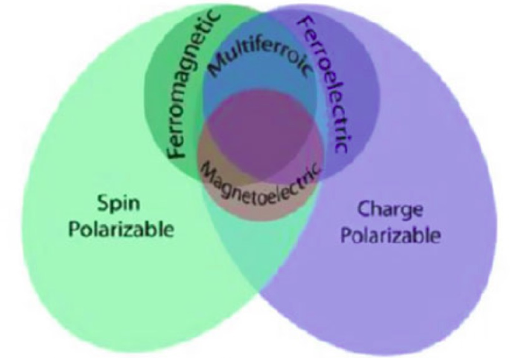
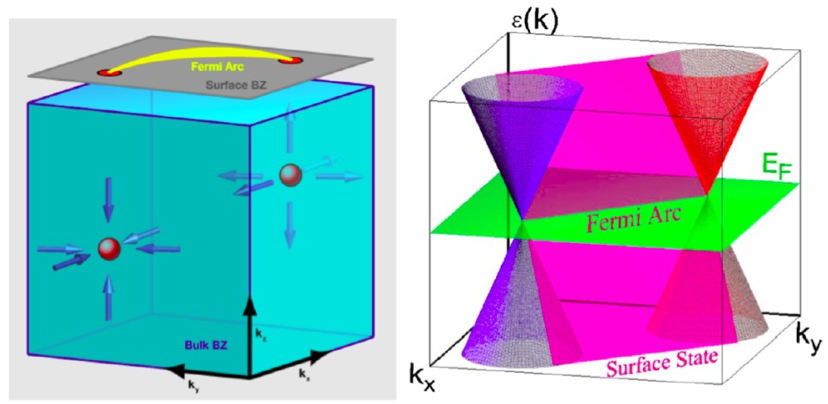

Research
Our lab is focused on the synthesis and study of a large variety of compounds, including oxides and intermetallics, with interesting low temperature structural instabilities, and unconventional electronic and magnetic ground states.
We are particularly interested in three research areas:
1. multiferroic and magnetoelectric materials, which exhibit two or more ferroic orders simutaneously, e.g. ferromagnetism, ferroelectricity, and ferroelasticity. The magnetic and ferroelectric properties and their coupling effects are investigated by various imaging techniques, such as dielectric constant, ferroelectricity, magnetization, magnetoelectric coefficient etc.

2. Superconductivity. For a superconductor something dramatically different happens upon cooling. Their resistivity suddenly vanishes entirely. The temperature where the resistivity vanishes is called the critical temperature, Tc. Below this temperature the resistivity is not just small, but is, as far as can be measured, exactly zero. The fundamental proof that superconductivity occurs in a given material is the demonstration of the Meissner-Ochsenfeld effect. This effect is the fact that superconductor expels a weak external magnetic field. It cannot be deduced from the simple fact of zero resistivity and so this is a new and separate physical phenomenon associated with superconductors.
3. Topological materials. Weyl and Dirac semimetals are three-dimensional phases of matter with gapless electronic excitations that are protected by topology and symmetry. As three-dimensional analogs of graphene, they have generated much recent interest. Deep connections exist with particle physics models of relativistic chiral fermions, and, despite their gaplessness, to solid-state topological and Chern insulators. Their characteristic electronic properties lead to protected surface states and novel responses to applied electric and magnetic fields.
